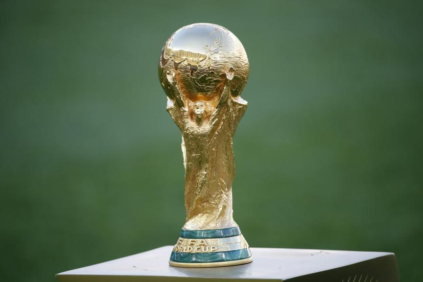

Tu vois, j'ai vraiment une grande mission car c'est juste une question d'awareness et c'est très, très beau d'avoir son propre moi-même ! C'est cette année que j'ai eu la révélation ! Ah non attention, tu vois au passage qu'il n'y a rien de concret car on vit dans une réalité qu'on a créée et que j'appelle illusion car l'aboutissement de l'instinct, c'est l'amour ! Tu vas te dire : J'aurais jamais cru que le karaté guy pouvait parler comme ça ! Tu vois, j'ai vraiment une grande mission car on est tous capables de donner des informations à chacun et parfois c'est bon parfois c'est pas bon. Mais ça, c'est uniquement lié au spirit.
Retour en hautEt y'a c'ui qui veut pas
Lalalalala.... ..... ..... ....
Mais c'est bon pour la tête
Que l'horloge du quartier
Et puis y'a moi qu'en fait partie aussi
On se prend la taille ou bien par les épaules
Le son de la chorale
C'est fait pour se toucher, se frotter les arêtes ,
Tout autour de sa tête
Chante le refrain que chantait ton papa
On se resserre, et maintenant qu'on l'a connaît, on va chanter
la chanson des sardines ! Attention ! Allez !
On se resserre, et maintenant qu'on l'a connaît, on va chante
la chanson des sardines ! Attention ! Allez !
Mais Pipo m'a confirmé
A tout les culs pincés
Les pauvres c'est tendance
En attendant elle s'fait pénétrer, par la parole de Dieu quand
elle est à genoux
Allez allez allez, venez chanter
Même si ce soir t'as perdu aux cartes
Même si ce soir t'as perdu aux cartes
Dans celle là, on se rassemble, à 5, ou 6, ou 7
Eclaire les fougères
Et puis, ... pour être encore plus heureux,
Ils viennent parler au journal
Mais t'as sanquette, de belles mirettes
Retour en haut
Lien vers le site de fifa Fifa
| Nom | Age | Pays |
|---|---|---|
| Antoine Griezman | 31 | |
| Francesco Totti | 46 | |